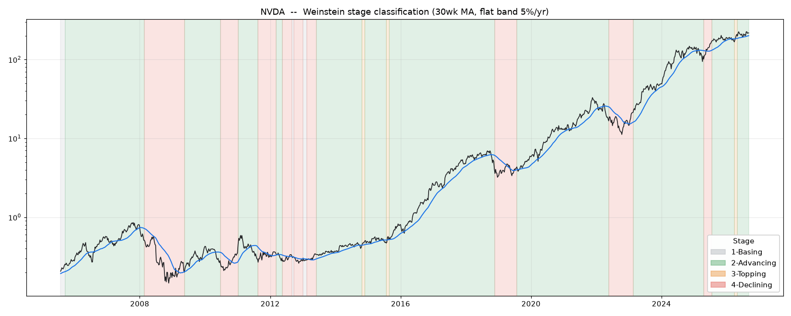
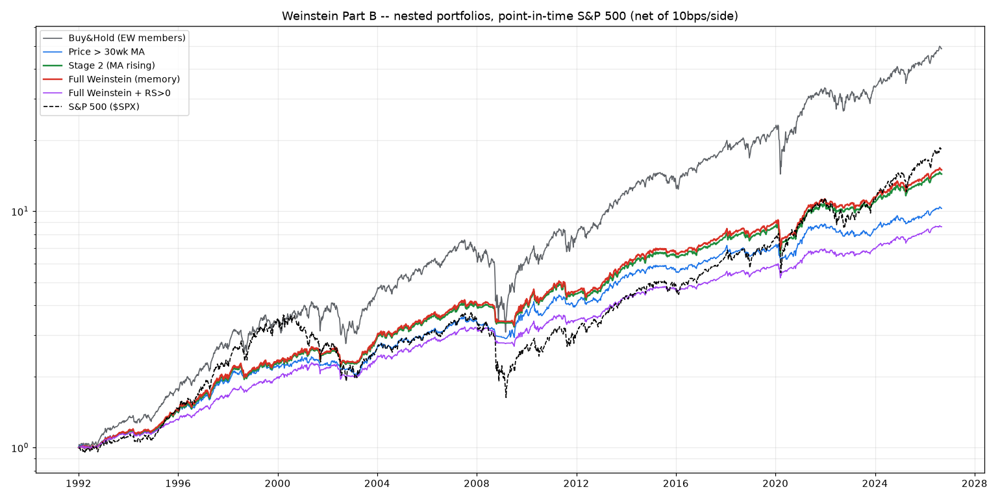

A technical-analysis rabbit hole · Sep 2026
Stan Weinstein’s four stages — basing, advancing, topping, declining — are one of the genuinely great frameworks for reading a chart. I’ve always loved it. So I did the respectful thing and stress-tested it: mechanized the stages exactly, ran them on 900,000 survivorship-free S&P 500 stock-weeks, and asked what the taxonomy knows that a plain 30-week moving average doesn’t. The answer surprised me a little, and it’s a compliment in disguise.
Here’s the setup, in case you’ve never gone down this road. Weinstein watches a stock’s weekly chart against its 30-week moving average and sorts it into a stage: a Stage 1 base (flat MA, after a decline), a Stage 2 advance (price above a rising MA), a Stage 3 top (flat MA, after an advance), and a Stage 4 decline (price below a falling MA). The whole prescription is: own Stage 2, avoid Stage 4. It’s taught everywhere, and the core instinct — trade with the trend, not against it — is exactly right.
What I wanted to know is narrower. Every piece of Weinstein’s method has been studied to death by academics: moving-average filters, relative strength, trend persistence. But nobody has isolated the classification itself. Does labeling a chart “basing” versus “topping” tell you anything a moving average can’t already see? That turns out to be a shockingly clean question to answer, because of one detail most people skate past.
Stage 2 · excess return
Per year over the S&P, 13-week forward (t = 2.7). The one stage that genuinely beats the market — and it’s defined as “MA rising.”
Basing minus Topping
Per year, on flat-MA weeks (t = −0.5). The one thing a moving average can’t compute — and it predicts nothing.
Survivorship inflation
Per year that naive backtests add to Stage 2 by using today’s index members backward. Why the framework looks better than it is.
Let’s start with the win, because Weinstein earned it. I tagged all 901,533 survivorship-free member stock-weeks by stage and measured the forward return of each. In raw terms the four stages look almost identical (~10–12%/yr apiece), which is already a little suspicious. But the honest cut is the market-excess return — how much a stage beats the S&P over the same window — and there exactly one stage separates from the pack. Stage 2 earns +2.3%/yr over the market with a t-stat of 2.7. Stages 1, 3, and 4 are indistinguishable from zero. Owning advances beats the index; the “avoid Stage 4” half doesn’t even hold for large caps, whose declines revert right back to a market return.
S&P 500 · point-in-time members · 1992–2026 · 13-week forward, annualized
Here’s the detail everything hinges on. Look at how the stages are actually defined. A rising MA is Stage 2. A falling MA is Stage 4. Those two are, word for word, a moving-average trend filter — anything that keys off the slope of the line produces them for free. So where could the taxonomy possibly add value a moving average can’t? Only in the third case: the flat MA. And a flat MA is both Stage 1 (basing) and Stage 3 (topping).
The only thing separating them is history — a flat MA reached from below (after a decline) is a base; the same flat line reached from above (after an advance) is a top. A moving average is blind to that difference; it just sees “flat.” Weinstein’s memory sees basing versus topping. That single distinction is the entire incremental content of the four-stage taxonomy. Everything else is the moving average wearing a costume. So the whole framework reduces to one testable question: on flat-MA weeks, do basing stocks out-earn topping stocks?
green = Stage 2 · red = Stage 4 · grey = Stage 1 · orange = Stage 3 · blue = 30-week MA

So I ran it. Take only the flat-MA weeks — the ones where a moving average throws up its hands — and compare what happens next after a basing label versus a topping label, week by week, using Fama–MacBeth means so no single bull market can manufacture a result. The difference is nothing. At 13 weeks, basing minus topping is −0.6%/yr with a t-stat of −0.5. If anything, “topping” mildly out-performs “basing” at short horizons — the opposite of the story. And this holds across twelve different ways of drawing the stages; the only specifications that reach significance lean the wrong way for Weinstein.
flat-MA weeks only · annualized excess of basing over topping · the taxonomy’s one job
A panel of returns is one thing; a tradeable book is another, so I built the nested ladder too. Buy-and-hold, then a plain “price above the 30-week MA” filter, then Stage 2 only (which is “MA rising”), then a full Weinstein book that actually uses the memory — buying Stage-1 breakouts early and selling at the first sign of a Stage-3 top — then that plus a relative-strength screen. Long-only, equal-weight, weekly, cash to T-bills, net of costs, on the same point-in-time universe.
The full Weinstein book and the plain Stage-2 filter come out identical — Sharpe 0.85 versus 0.85, MAR 0.32 versus 0.32, same drawdown. Their equity curves literally draw on top of each other. The relative-strength version gets a slightly better Sharpe, but only by sitting 56% in cash — that’s lower risk, not more skill. The real, replicable benefit in the whole table is the generic trend filter: it roughly halves the drawdown of buy-and-hold and lifts risk-adjusted return — but that’s a one-line moving average, and it costs you about four points of annual return to get it.
| System | Invested | CAGR | Sharpe | Max DD | MAR |
|---|---|---|---|---|---|
| Buy & hold (EW members) | 100% | 11.8% | 0.70 | −59% | 0.20 |
| Price > 30-week MA | 62% | 6.9% | 0.82 | −19% | 0.36 |
| Stage 2 (MA rising) | 59% | 8.0% | 0.85 | −25% | 0.32 |
| Full Weinstein (the memory) | 61% | 8.1% | 0.85 | −25% | 0.32 |
| Full Weinstein + RS>0 | 44% | 6.4% | 0.93 | −17% | 0.37 |
| S&P 500 (cap-wt) | 100% | 8.7% | 0.58 | −56% | 0.15 |
log scale · net of costs · the red line is drawn on top of the green one

One more thing, because it explains why so many glowing Weinstein backtests exist. Almost all of them take today’s S&P 500 members and run the rules backward — which quietly deletes every company that got kicked out of the index, precisely the names that rotted through Stage 4 into delisting. Redo the Stage-2 number that way and it jumps from a true +12.4% to +18.7% a year. That 6.3-point mirage is more than double the real edge of the trend filter. A moving average in a stage-analysis costume, tested on survivors only, looks like genuine alpha. It isn’t.
Weinstein’s Stage 2 works because it is a moving-average trend filter — the one component of the framework with a real edge. The basing-versus-topping memory that makes the taxonomy feel like a deeper insight is, on the numbers, a moving average in a costume.
The same good idea, one rabbit hole deeper.Keep using stage analysis — as a language. It’s a wonderful way to describe where a stock sits in its trend, and the discipline of owning advances and standing aside for declines is exactly the behavior that shows up as the trend-filter benefit in the table above. What the evidence says is narrower and kind of freeing: you don’t need the elaborate apparatus. The sign of the 30-week moving-average slope carries all the forecasting power the four stages do, with a fraction of the fuss, none of the discretion, and immunity to the survivorship bias that flatters the hand-drawn version. Watch the line, not the label. That 30-week line Weinstein built the whole thing around? That was always the tell.
None of this makes Weinstein wrong — that’s the point. He reached for the right variable (trend state, via the 30-week line) and built a vivid, teachable language around it that has helped a generation of traders stay on the correct side of the tape. Chasing the taxonomy’s one distinctive claim all the way down just adds a coda: the magic was in the moving average the whole time. Hats off to a classic — it holds up exactly where it should.